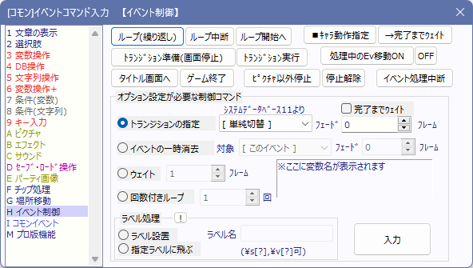

イベントコマンド 【その他1】
様々な細かい処理を行います。

【各機能の説明】
[ループ（繰り返し）]
「ループ中断」が実行されるまで、ループ内のコマンドを繰り返します。
[ループ中断]
ループから抜け出します。
[ループ開始へ]
現在のループの開始点まで戻ります。
[■動作指定]
イベントや主人公のキャラチップの動きを制御します。詳細は「動作指定」をご覧下さい。
[→完了までウェイト]
現在処理されている「■動作指定」の処理が終わるまで、次のコマンドを実行しません。
[トランジション準備]
画面の全描画を停止します、ただし処理自体は続行されています。
[トランジション実行]
「トランジションの指定」で指定されている画面処理を実行し、画面描画を再開します。
なお、デフォルトの指定は「単純切替」の「20フレーム」、完了までウェイトは「オフ」です。
[処理中のEv移動ON/OFF]
イベント処理中に、他のイベントの動作を行うかどうかを設定します。OFFにするとイベント処理中は他のイベントが動きません。
[タイトル画面へ]
ゲームをリセットし、ゲーム開始地点に戻ります。
[ゲーム終了]
ゲームをウィンドウごと終了させます。
[ピクチャ以外停止][停止解除]
現在映ってる画面を記憶し、以後ピクチャ以外（つまりキャラクターとマップ）の描画を現在のまま停止します。「停止解除」でその状態を解除します。
なお、ロード直後に「ピクチャ以外停止」を行うと真っ暗なままになりますので、その際は数フレームウェイトさせてご利用下さい。
※「現在映っている画面」を記憶する都合上、ピクチャが表示されている状態で「ピクチャ以外停止」すると、元のピクチャが残ったままになってしまいますのでご注意下さい。
[イベント処理中断]
以降のイベントコマンドを無視して、イベントを終了します。
[トランジションの指定]
「トランジション実行」で使用するトランジション方式を指定します。トランジション画像（グレースケール画像の必要あり）はシステムデータベースタイプ11[トランジションタイプ]より読み込まれます。
【イベントの一時消去】
指定したイベントを消去します。消去したイベントは、他のマップに場所移動しない限り再び実行されることはありません。
※なお、イベント消去は「透明」にして「イベントを起こさせないようにする」処理を行っているだけで、完全な消去とは違います。
内部的にイベントとして存在し続けており、イベントIDもそのまま保持しているのです。
そのため、隠しコードの「<<MAKE_EVENT_～>>」で作った空イベントをこの「一時消去」を使って完全消去することはできません。空イベントを完全消去したい場合は隠しコードの<<DELETE_EVENT～>>コマンドを使ってください。
【ウェイト】
指定したフレーム数の時間だけ、イベント処理を進めずに停止します。このフレーム指定には変数を指定することもできます（例：2000000=通常変数0番、など）。
【回数付きループ】
指定した回数だけ、ループ処理を行います。「ループ（繰り返し）」と同じ処理ですが、実行回数を指定できるのが特徴です。ループ回数には変数を指定することもできます。
[ラベル処理]
ラベルの設定や、指定ラベルまで処理を移動させることができます。ここで「ラベル」とは処理の目印のようなもので、設置しておけばそのラベルまで飛ぶことができます。ただし、移動できるのは同一イベント内のラベルに限ります。
なお、「指定ラベルに飛ぶ」処理を行って回数付きループ内に飛ぶと、「回数付きループ」の残りループ回数がリセットされますのでご注意下さい。
※ラベル処理 補足（2010/04/13)
ラベル処理によるジャンプ先が条件分岐内で、かつその条件分岐に「上記以外の場合」があった場合、
どの選択肢に飛んでも、分岐内容の処理が終わると、次に「上記以外の場合」の分岐内容が処理されてしまいます。
これは、ラベルで条件分岐内に入ると、内部的に条件が何も成立していないと判定されているために発生する現象です。
高速化と安定化の兼ね合いで、この処理を仕様とさせていただいておりますので、必要なら対策を行って下さい。
（基本的に、条件分岐内にラベルジャンプすることは推奨できません）